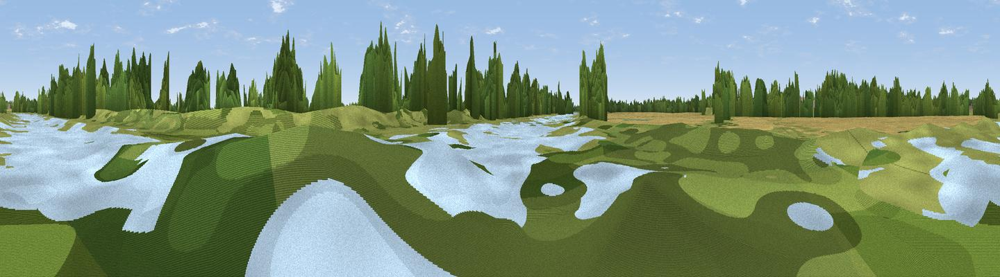

BridgeClosed
#44916 in England · top 70% of its area beats it · near BluntishamWhere it is
The exact computed spot (TL 36945 72712). Click the marker for map links.
The view, rendered

A 360° render of this exact spot computed from the terrain model, tree cover and land cover — summer colours, afternoon light, calibrated against photographs of famous viewpoints. Real trees, hedges and buildings will differ in detail.
The panorama
Grey silhouette: terrain skyline in each direction (720 bearings, Earth curvature and refraction included). Dashed green: skyline with trees (+15 m) and buildings (+8 m) as obstacles. Blue strip: how far the ground is visible on each bearing.
Where the view opens
Wedge length = distance to the farthest visible ground on that bearing (vegetation-aware). Rings at 10, 25 and 50 km.
What fills the view
58% grassland · 22% water · 13% cropland · 6% woodland ·
Angular shares of the visible panorama (visual magnitude), not map area. Landscape diversity 0.48 (0–1 Shannon).
Key numbers
More beautiful places nearby
The staircase of upgrades: each row has a higher view potential than everything closer. Driving times are estimates from straight-line distance, calibrated against real road routing — check an actual route before setting out.
| Place | Direction | Drive | Score |
|---|---|---|---|
| Bird lookout | ESE · 1 km | ~3 min | 18.1 |
| Haddenham village | ENE · 10 km | ~19 min | 22.5 |
| Viewpoint near Wennington | WNW · 16 km | ~28 min | 28.0 |
| Viewpoint near Coton | SSE · 16 km | ~28 min | 37.9 |
| New Farm Hill | S · 20 km | ~34 min | 41.3 |
| Viewpoint near Harlton | S · 21 km | ~35 min | 44.9 |
| Viewpoint near Stapleford | SSE · 23 km | ~38 min | 52.9 |
| Viewpoint near Royston | S · 33 km | ~50 min | 56.6 |
52.33541, 0.00848 · source: osm viewpoint · position refined by local search. Computed location — check access rights before visiting.